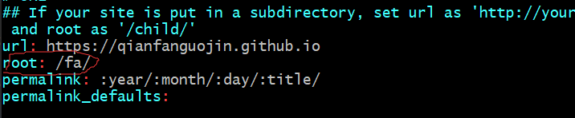
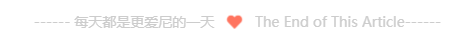
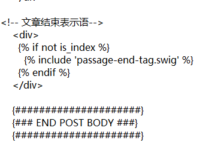
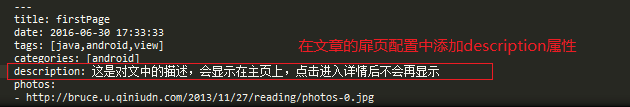

前言
Moustache’s First Blog 介绍 Hexo+Github Page的步骤和遇到的问题，并在此列出参考的文章，衷心感谢。
一、环境准备
- Node.js
- Npm
- Git
二、配置本地Hexo
1.配置hexo全局控制命令
在cmd或者其他命令行工具下输入如下：
1 | npm install -g hexo-cli |
2.下载Hexo 工具
2.1初始化博客目录
在准备好的一个目录下存放自己的博客网站文件，例如我的是 /e/blog，也就是在E盘根目录新建了一个blog文件夹
然后我们进入该目录，点击鼠标右键，然后点击 git bash 出现一个命令窗口，接下来我们的大多数操作都用它来完成。
Git Bash在这里并不是唯一的选择，如您熟悉其他命令工具，也可以使用其他工具，这里使用Git Bash是为了减少更多不必要的麻烦
在 Git Bash窗口下输入如下命令：
1 | hexo init |
按下回车Enter，Git bash 会自动下载相关文件
2.2 本地生成运行
在Git Bash窗口下，依次执行：
1 | hexo clean |
这样，Hexo会默认运行在你本机的4000端口上，然后我们在浏览器中输入http://localhost:4000即可显示主题为landscaped 的页面
三、部署到GitPage
这个步骤开始前，请确保你已经注册了Github账号，且已经配置好了相关信息，配置方法请向上翻阅 二、安装Git 环节下。
1.在Github创建仓库。
打开 Github官网 登陆你的Github账号，点击页面右上角的 + 、New repository新建一个repository仓库
为避免麻烦，这里仓库名必须按照
yourusername.github.io规范填写，填写完仓库名后，我们点击Create repository按钮，然后等待其创建完成。复制该项目的HTTP链接https://github.com/yourusername/yourusername.github.io.git
yourusername指的就是你的github用户名，本文中出现的该字段都表示这个意思。
2.Hexo 配置
打开 Git Bash 切换到博客的根目录，输入：
1 | npm install hexo-depolyer-git --save |
然后输入：
1 | vim _config.yml |
进入站点配置文件编辑模式，我们向下翻到底部，可以看到 depoly 字段
在英文输入模式下，按键盘上的 i键进入编辑模式，将depoly字段编辑如下：
1 | deploy: |
注意这里:后面一定要加空格，不然会出错。
然后我们按Esc 键，输入:wq 保存退出
3.完成部署
在命令行输入并执行：
1 | hexo clean |
其中，hexo d 则是将本地文件推送到远程。
在第一次推送时，需要输入github userName和password
四、使用Next主题
1. 更改主题
Hexo主题库可以找到更多主题，以下以Next为例
在Hexo目录下有两份重要的配置文件，其名称都是
_config.yml。其中，一份位于站点根目录下，主要包含Hexo的自身配置，另一份位于主题目录下，主要用于配置主题相关的选项。
在接下来的描述中，我将前者称为 站点配置文件，后者称为 主题配置文件 。
1.1 安装Next
安装Next主题的方式很简单，利用Git bash 在博客主目录下执行：
1 | git clone https://github.com/theme-next/hexo-theme-next themes/next |
然后我们打开站点配置文件，将theme属性从默认值landscape改为next
1 | theme: next |
记住，所有的配置属性
:后面都要加一个空格,这样我们设定的值才会生效。
1.2 选择不同的Next主题样式
Next提供了四种主题风格scheme,可以在主题配置文件中配置：
1 |
|
这里个人选择 Gemini
2. 更改站点属性
2.1 更改网站名、语言、作者
打开站点配置文件，找到site字段，具体修改如下：
1 |
|
2.2 更改blog favicon
博客网站的图标可以在easyicon、bitbug、iconfont等网站选择和制作，然后选择或者创建相应大小的图标文件，放置在blog/themes/next/sources/images目录下，并在主题配置文件中进行如下配置，只需要设置small和medium两个就可以：
1 | favicon: |
3. 菜单栏
3.1 显示更多栏目
在主题配置文件中修改如下：
1 | menu: |
3.2 图标和内容量
1 | menu_settings: |
3.3 添加分类、标签、关于菜单项
首先打开主题下的配置文件_config.yml，然后搜索menu找到如下配置项，将about、tags、categories前的#号去掉，就开启了关于、标签和分类标签，当然还有其他菜单项也可以开启
1 | menu: |
需运行如下命令新建相关页面
1 | hexo new page "about" |
打开各页面对应的index.md文件，编辑如下内容
1 | title: about # 在页面中显示的title |
然后在发布的博文开头添加tags和categories,如：
1 | title: The Starting Point of Blogs |
3.4 本地搜索
在你站点的根目录下
1 | $ npm install hexo-generator-searchdb --save |
打开 Hexo 站点的 _config.yml,添加配置
1 | search: |
打开 themes/next/_config.yml ,搜索关键字 local_search ,设置为 true：
1 | # Local search |
4. 侧边栏
以下设置都是在 主题配置 文件中
4.1 显示可跳转 日志 / 分类 / 标签页 的链接
1 | # Posts / Categories / Tags in sidebar. |
4.2 社交信息设置
1 | social: |
Next 默认给出了一些模板，我们只要将其中的链接改为自己的链接就可以了，当然你也可以自己定义，格式为
名字: 链接 || 图标名，图标必须是FontAwesome网站中能找到的图标名。
例如我添加我的博客地址：
1 | qianfanguojin: https://qianfanguojin.github.io/ || codepen |
4.3 圆形头像设置
1 | avatar: |
将自己喜欢的头像头像按照需求自己更换自己喜欢的就可以了，不过这里要注意一下头像可能会变成椭圆，如果头像是椭圆的，是因为图片不是一个正方形的图片，找到一个宽高像素一样的的图片即可。
设置头像边框为圆形框
打开位于 themes/next/source/css/_common/components/sidebar/sidebar-author.syl 文件,修改如下:
1 | .site-author-image { |
4.4 设置侧边栏社交图标
打开 themes/next/_config.yml 文件,搜索关键字 social_icons ，添加社交站点名称（注意大小写）图标，Font Awesome图标
4.5 RSS
在你 Hexo 站点目录下：
1 | $ npm install hexo-generator-feed --save |
打开 Hexo 站点下的 _config.yml ,添加如下配置：
1 | # feed |
4.6 友情链接
打开 themes/next/_config.yml 文件,搜索关键字 Blog rolls：
1 | # Blog rolls |
4.7 配置解读
1 | toc: |
5. 页面设置
5.1 鼠标点击红心
目前网上大多数文章都是在themes/next/source/js/src 下新建文件，但笔者写这篇文章时最新版Next已经没有src文件夹了 ，于是，我们可以在themes/next/source/js/下新建clicklove.js内容如下：
1 | !function(e,t,a){function n(){c(".heart{width: 10px;height: 10px;position: fixed;background: #f00;transform: rotate(45deg);-webkit-transform: rotate(45deg);-moz-transform: rotate(45deg);}.heart:after,.heart:before{content: '';width: inherit;height: inherit;background: inherit;border-radius: 50%;-webkit-border-radius: 50%;-moz-border-radius: 50%;position: fixed;}.heart:after{top: -5px;}.heart:before{left: -5px;}"),o(),r()}function r(){for(var e=0;e<d.length;e++)d[e].alpha<=0?(t.body.removeChild(d[e].el),d.splice(e,1)):(d[e].y--,d[e].scale+=.004,d[e].alpha-=.013,d[e].el.style.cssText="left:"+d[e].x+"px;top:"+d[e].y+"px;opacity:"+d[e].alpha+";transform:scale("+d[e].scale+","+d[e].scale+") rotate(45deg);background:"+d[e].color+";z-index:99999");requestAnimationFrame(r)}function o(){var t="function"==typeof e.onclick&&e.onclick;e.onclick=function(e){t&&t(),i(e)}}function i(e){var a=t.createElement("div");a.className="heart",d.push({el:a,x:e.clientX-5,y:e.clientY-5,scale:1,alpha:1,color:s()}),t.body.appendChild(a)}function c(e){var a=t.createElement("style");a.type="text/css";try{a.appendChild(t.createTextNode(e))}catch(t){a.styleSheet.cssText=e}t.getElementsByTagName("head")[0].appendChild(a)}function s(){return"rgb("+~~(255*Math.random())+","+~~(255*Math.random())+","+~~(255*Math.random())+")"}var d=[];e.requestAnimationFrame=function(){return e.requestAnimationFrame||e.webkitRequestAnimationFrame||e.mozRequestAnimationFrame||e.oRequestAnimationFrame||e.msRequestAnimationFrame||function(e){setTimeout(e,1e3/60)}}(),n()}(window,document); |
然后在修改themes/next/layout/_layout.swig 文件末尾添加
1 | <!-- 页面点击小红心 --> |
注意
很多人配置正确但不显示的原因主要出在这里，也就是
src后面的文件链接错误，hexo中使用的是相对路径，也就是说,只要你不指定为绝对路径,设置的链接都将是root+url的形式，一般来说，大多数用户默认的root都为/，但是有些情况，例如设置了Git Page ,要修改root的路径，root路径我们可以在 站点配置文件 中找到：
1 | # URL |

上图就是在我设置了Git Page后 root路径的值，在这种情况下，我们在修改themes/next/layout/_layout.swig 文件时，src 的路径都应该加上root 的路径值，因此，在这种情况下代码应修改为：
1 | <!-- 页面点击小红心 --> |
确定无误后最后在主题配置文件末尾添加：
1 | # 显示页面红心 |
另外还有一个效果，跟那个红心是差不多的（只能选一个），首先在
themes/next/source/js/src里面建一个叫fireworks.js的文件，代码如下：
1 | ;function updateCoords(e){pointerX=(e.clientX||e.touches[0].clientX)-canvasEl.getBoundingClientRect().left,pointerY=e.clientY||e.touches[0].clientY-canvasEl.getBoundingClientRect().top}function setParticuleDirection(e){var t=anime.random(0,360)*Math.PI/180,a=anime.random(50,180),n=[-1,1][anime.random(0,1)]*a;return{x:e.x+n*Math.cos(t),y:e.y+n*Math.sin(t)}}function createParticule(e,t){var a={};return a.x=e,a.y=t,a.color=colors[anime.random(0,colors.length-1)],a.radius=anime.random(16,32),a.endPos=setParticuleDirection(a),a.draw=function(){ctx.beginPath(),ctx.arc(a.x,a.y,a.radius,0,2*Math.PI,!0),ctx.fillStyle=a.color,ctx.fill()},a}function createCircle(e,t){var a={};return a.x=e,a.y=t,a.color="#F00",a.radius=0.1,a.alpha=0.5,a.lineWidth=6,a.draw=function(){ctx.globalAlpha=a.alpha,ctx.beginPath(),ctx.arc(a.x,a.y,a.radius,0,2*Math.PI,!0),ctx.lineWidth=a.lineWidth,ctx.strokeStyle=a.color,ctx.stroke(),ctx.globalAlpha=1},a}function renderParticule(e){for(var t=0;t<e.animatables.length;t++){e.animatables[t].target.draw()}}function animateParticules(e,t){for(var a=createCircle(e,t),n=[],i=0;i<numberOfParticules;i++){n.push(createParticule(e,t))}anime.timeline().add({targets:n,x:function(e){return e.endPos.x},y:function(e){return e.endPos.y},radius:0.1,duration:anime.random(1200,1800),easing:"easeOutExpo",update:renderParticule}).add({targets:a,radius:anime.random(80,160),lineWidth:0,alpha:{value:0,easing:"linear",duration:anime.random(600,800)},duration:anime.random(1200,1800),easing:"easeOutExpo",update:renderParticule,offset:0})}function debounce(e,t){var a;return function(){var n=this,i=arguments;clearTimeout(a),a=setTimeout(function(){e.apply(n,i)},t)}}var canvasEl=document.querySelector(".fireworks");if(canvasEl){var ctx=canvasEl.getContext("2d"),numberOfParticules=30,pointerX=0,pointerY=0,tap="mousedown",colors=["#FF1461","#18FF92","#5A87FF","#FBF38C"],setCanvasSize=debounce(function(){canvasEl.width=2*window.innerWidth,canvasEl.height=2*window.innerHeight,canvasEl.style.width=window.innerWidth+"px",canvasEl.style.height=window.innerHeight+"px",canvasEl.getContext("2d").scale(2,2)},500),render=anime({duration:1/0,update:function(){ctx.clearRect(0,0,canvasEl.width,canvasEl.height)}});document.addEventListener(tap,function(e){"sidebar"!==e.target.id&&"toggle-sidebar"!==e.target.id&&"A"!==e.target.nodeName&&"IMG"!==e.target.nodeName&&(render.play(),updateCoords(e),animateParticules(pointerX,pointerY))},!1),setCanvasSize(),window.addEventListener("resize",setCanvasSize,!1)}"use strict";function updateCoords(e){pointerX=(e.clientX||e.touches[0].clientX)-canvasEl.getBoundingClientRect().left,pointerY=e.clientY||e.touches[0].clientY-canvasEl.getBoundingClientRect().top}function setParticuleDirection(e){var t=anime.random(0,360)*Math.PI/180,a=anime.random(50,180),n=[-1,1][anime.random(0,1)]*a;return{x:e.x+n*Math.cos(t),y:e.y+n*Math.sin(t)}}function createParticule(e,t){var a={};return a.x=e,a.y=t,a.color=colors[anime.random(0,colors.length-1)],a.radius=anime.random(16,32),a.endPos=setParticuleDirection(a),a.draw=function(){ctx.beginPath(),ctx.arc(a.x,a.y,a.radius,0,2*Math.PI,!0),ctx.fillStyle=a.color,ctx.fill()},a}function createCircle(e,t){var a={};return a.x=e,a.y=t,a.color="#F00",a.radius=0.1,a.alpha=0.5,a.lineWidth=6,a.draw=function(){ctx.globalAlpha=a.alpha,ctx.beginPath(),ctx.arc(a.x,a.y,a.radius,0,2*Math.PI,!0),ctx.lineWidth=a.lineWidth,ctx.strokeStyle=a.color,ctx.stroke(),ctx.globalAlpha=1},a}function renderParticule(e){for(var t=0;t<e.animatables.length;t++){e.animatables[t].target.draw()}}function animateParticules(e,t){for(var a=createCircle(e,t),n=[],i=0;i<numberOfParticules;i++){n.push(createParticule(e,t))}anime.timeline().add({targets:n,x:function(e){return e.endPos.x},y:function(e){return e.endPos.y},radius:0.1,duration:anime.random(1200,1800),easing:"easeOutExpo",update:renderParticule}).add({targets:a,radius:anime.random(80,160),lineWidth:0,alpha:{value:0,easing:"linear",duration:anime.random(600,800)},duration:anime.random(1200,1800),easing:"easeOutExpo",update:renderParticule,offset:0})}function debounce(e,t){var a;return function(){var n=this,i=arguments;clearTimeout(a),a=setTimeout(function(){e.apply(n,i)},t)}}var canvasEl=document.querySelector(".fireworks");if(canvasEl){var ctx=canvasEl.getContext("2d"),numberOfParticules=30,pointerX=0,pointerY=0,tap="mousedown",colors=["#FF1461","#18FF92","#5A87FF","#FBF38C"],setCanvasSize=debounce(function(){canvasEl.width=2*window.innerWidth,canvasEl.height=2*window.innerHeight,canvasEl.style.width=window.innerWidth+"px",canvasEl.style.height=window.innerHeight+"px",canvasEl.getContext("2d").scale(2,2)},500),render=anime({duration:1/0,update:function(){ctx.clearRect(0,0,canvasEl.width,canvasEl.height)}});document.addEventListener(tap,function(e){"sidebar"!==e.target.id&&"toggle-sidebar"!==e.target.id&&"A"!==e.target.nodeName&&"IMG"!==e.target.nodeName&&(render.play(),updateCoords(e),animateParticules(pointerX,pointerY))},!1),setCanvasSize(),window.addEventListener("resize",setCanvasSize,!1)}; |
打开themes/next/layout/_layout.swig,在</body>上面写下如下代码：
1 | {% if theme.fireworks %} <canvas class="fireworks" style="position: fixed;left: 0;top: 0;z-index: 1; pointer-events: none;" ></canvas> <script type="text/javascript" src="//cdn.bootcss.com/animejs/2.2.0/anime.min.js"></script> <script type="text/javascript" src="/js/src/fireworks.js"></script> {% endif %} |
打开主题配置文件，在里面最后写下：
1 | # Fireworks |
5.2 添加动态背景
1 | # 设置动态背景 |
新版Next已经支持了上面三种动态背景方式，大家想用哪种就将该项的enable 设为 true,具体效果大家自己尝试，一般用的是第一种。
当然，指明要用那种，但是Next没有自带该动画的包，我们要自己下载，链接就在注释中# Dependencies 项后面 ，例如我下载第一种：
1 | git clone https://github.com/theme-next/theme-next-canvas-nest themes/next/source/lib/canvas-nest |
链接后的是指定下载后放到的文件夹名，大家要注意是放在lib 下且文件夹名字应该和上面的设置项名字一样。
个人使用了canvas-ribbon的背景，且优先使用cdn引入
1 | canvas_ribbon: |
1 | \# Internal version: 1.0.0 |
5.3 博客底部基本布局
1 | # 博客底部布局 |
5.4 底部显示busuanzi博客访客/访问次数统计
修改主题配置文件内容：
1 | # 不蒜子统计功能 |
5.5 右上角显示Github标识
修改主题配置文件：
1 | # `Follow me on GitHub` banner in the top-right corner. |
5.6 接入网易云播放器
首先在网易云音乐网页端搜索你想播放的音乐（有版权保护的不行）
在网易云客户端点击生成外链播放器，得到外链的html代码：
后我们将代码粘贴到一个合适的位置，建议在侧边栏，对应的文件是themes/next/layout/_macro/sidebar.swig ，不同的位置效果呈现的效果不同，例如我的：
5.7 浏览页面的时候显示当前浏览进度
打开 themes/next/_config.yml ,搜索关键字 scrollpercent ,把 false 改为 true。
1 | # Scroll percent label in b2t button |
如果想把 top按钮放在侧边栏,打开 themes/next/_config.yml ,搜索关键字 b2t ,把 false 改为 true。
1 | # Back to top in sidebar |
5.8 添加顶部加载条
打开 themes/next/_config.yml ，搜索关键字 pace ,设置为 true ,可以更换加载样式：
1 | Dependencies: https://github.com/theme-next/theme-next-pace |
1 | # Progress bar in the top during page loading. |
5.9 自定义鼠标样式
打开 themes/next/source/css/_custom/custom.styl ,在里面写下如下代码：
1 | // 鼠标样式 |
其中 url 里面必须是 ico 图片，ico 图片可以上传到网上（我是使用七牛云图床），然后获取外链，复制到 url 里就行了
6 文章内容相关
6.1 文章摘要显示（显示阅读全文按钮）
自动形成摘要模式
打开主题配置文件，修改内容如下：
1
2
3
4
5
6
7auto_excerpt:
enable: true
length: 150 # 截取的内容长度
# Read more button
# If true, the read more button would be displayed in excerpt section.
read_more_btn: true # 是否显示阅读全文按钮但是这样的方式不够自由，我们可以使用如下方式：
6.2 代码块设置
使用参照如下：
1 | # 代码块设置 |
代码块样式的具体内容可以查看官方文档
6.3 添加打赏
1 | # Reward (Donate) |
6.4 添加版权信息
1 | # Creative Commons 4.0 International License. |
注意
版权信息中的本文链接 由主题配置中的
url控制
6.5 自定义文章底部版权声明
效果：
1 | 作者：Dragonstyle |
在目录 themes/next/layout/_macro/ 下添加 my-copyright.swig ,内容如下:
1 | {% if page.copyright %} |
在目录 themes/next/source/css/_common/components/post/ 下添加 my-post-copyright.styl,内容如下:
1 | .my_post_copyright { |
修改 themes/next/layout/_macro/post.swig ,在代码如下：
1 | {% if theme.wechat_subscriber.enabled and not is_index %} |
之前添加增加如下代码：
1 | <div> |
修改 themes/next/source/css/_common/components/post/post.styl 文件，在最后一行增加代码：
1 | @import "my-post-copyright" |
设置新建文章自动开启
copyright,即新建文章自动显示自定义的版权声明,设置 your site/scaffolds/post.md文件
1 | --- |
6.6 添加图片
设置站点配置
_config.yml:将post_asset_folder: false改为post_asset_folder: true安装插件：在hexo根目录打开Git Bash,执行
1
npm install hexo-asset-image --save
运行
hexo n "XXXXXX",生成XXXXX.md博文时就会在/source/_posts目录下生成XXXXXX的文件夹，将你想在XXXXX博文中插入的照片放置到这个同名文件夹中即可，图片的命名随意。添加图片:在想添加的位置写入
,例如
6.7 添加文章结束提示语
提示：原文章中此处出现问题

核心代码：
1 | <div> |
- 如果你想简单一点实现，直接复制这段代码，然后将其插入到
themes/next/layout/_macro/post.swig文件的如下位置：

当然，我们大多时候对功能都需要一个灵活性，也就是可以开关。为了实现这样的效果，我们先在themes/next/layout/_macro/ 新建 passage-end-tag.swig 文件，将上面的 核心代码 添加进去。
然后我们修改themes/next/layout/_macro/post.swig 文件 ，将上面简单实现的代码替换成：
1 | <!-- 文章结束表示语--> |
然后，我们在主题配置文件末尾添加：
1 | # 文章结束提示语 |
我们就可以在这里将其设为true 或 false 来控制其显示。
个人在配置的时候，使用
<i class="fa fa-heart-o" aria-hidden="true">一直不被解析，没找到原因，换了一个图标就显示了
另外一个问题，如果出现乱码的情况
解决办法：首先是把乱码部分对应的文件用写字板打开，转换其编码格式为UTF-8
最后一个应该注意的是，结束语是居中显示，需要注意左右两面内容的实际长度一致，否则很丑
6.8 添加博客字数和阅读时间统计功能
首先在站点根目录下配置依赖：
1 | npm install hexo-symbols-count-time --save |
然后再站点配置文件中加入以下内容：
1 | symbols_count_time: |
最后在主题配置文件中修改为以下内容：
1 | # 字数及访问时间统计 |
6.9 修改 tag 图标
默认的 tag 样式为 # 不带图标，我们可以改成使用图标
新版Next 已经帮我们集成了这个功能，我们只要在主题配置文件中修改：
1 | # Use icon instead of the symbol # to indicate the tag at the bottom of the post |
6.10 设置博客摘要显示
首先我们需要开启摘要功能，修改主题配置文件：参考该方法
solution 1 在文章中使用进行手动截断(推荐)
1 | <!--more--> |
solution 2 在文章中的front-matter中添加description，并提供文章摘要
这种方式只会在首页列表中显示文章的摘要内容，进入文章详情后不会再显示。使用这种方法也可以实现首页文章部分显示的效果
方法如下图所示：

solution 3 自动生成摘要
想要自动生成文章摘要，需在主题配置文件中添加以下代码：
1 | auto_excerpt: |
其中的length值为摘要所截取的字符长度。
6.11 设置文章英文链接
hexo生成的默认文章链接格式为： :year/:month/:day/:title/，这种默认的配置缺点很明显，当文件名是中文的时候url链接里就有中文出现。
可以通过添加urlname字段实现文章的链接为英文，在md文件的Front-matter区域新增urlname属性，值为文章的英文title，参考如下：
1 | --- |
再将博客配置文件下的permalink值改为：
1 | permalink: :year/:month/:day/:urlname/ |
6.12 Markdown首行缩进
在段落开头，输入以下字符，然后紧跟着输入文本即可。
1 |         |
6.13 Markdown转义字符
md中用到的主要可能有语法意义的非空白符号有：\ ` * _ { } [ ] ( ) # + - . !
在正常段落中要原样输出以上符号，一般需要加反斜杠\在前（连续两个反斜杠输出一个反斜杠。
6.14 修改文章间分割线
打开 themes/next/source/css/_common/components/post/post-eof.styl ,修改：
1 | .posts-expand { |
6.15 博文置顶
打开 Hexo 站点下 node_modules/hexo-generator-index/lib/generator.js 文件。代码全部替换为：(next 5.1以后主题已自带此功能)
1 | 'use strict'; |
打开文章添加top字段,设置数值，数值越大文章越靠前：
1 | --- |
6.16 文章顶部显示更新时间
打开主题配置文件 _config.yml ,搜索关键字 updated_at 设置为 true ：
1 | # Post meta display settings |
编辑文章,增加关键字updated（next可以根据文章改变时间自动更改）
1 | --- |